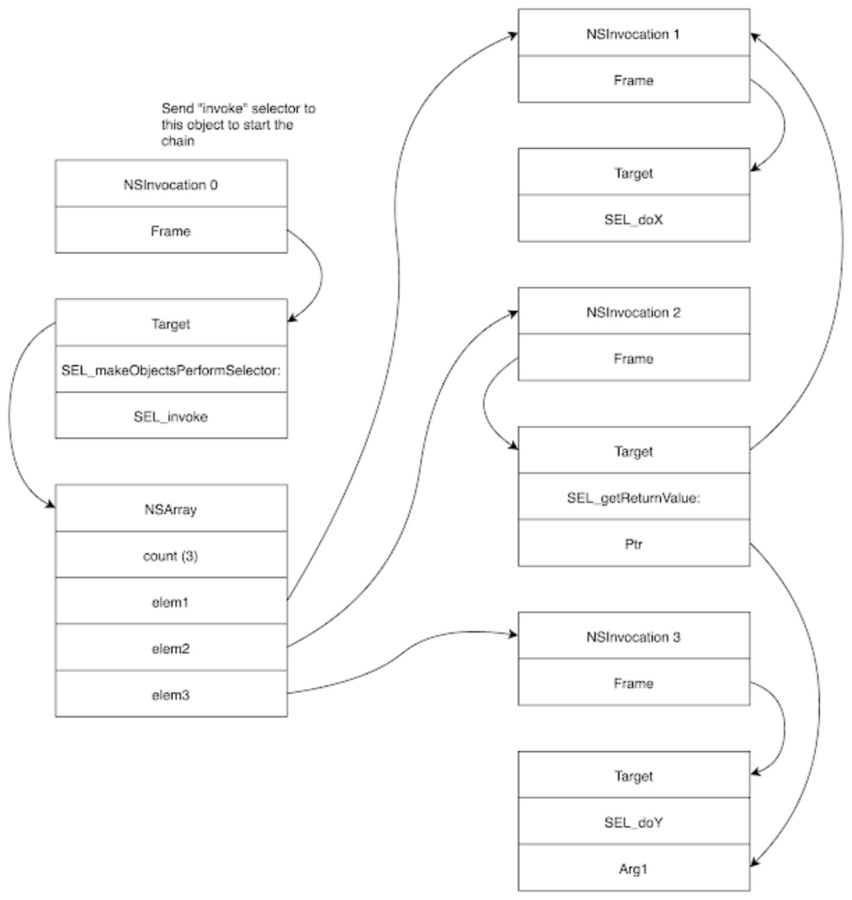

<!DOCTYPE HTML>
<html>
<head><meta name="generator" content="Hexo 3.9.0">
    <meta charset="utf-8">
    <meta http-equiv="X-UA-Compatible" content="chrome=1">
    <meta name="viewport" content="width=device-width, initial-scale=1, maximum-scale=1, user-scalable=no">

    

    <title>记录几个iOS相关的洞 | </title>
    <meta name="author" content="ssj">
    
    <meta name="description" content="iOS入门级玩家。也不知道理解的对不对。
H11ANEInOops, I missed it again!https://googleprojectzero.blogspot.com/
这是XNU一个比较有意思的洞。有两个大致相同但是权限不同的类：H11ANEInDirectPathClient和H">
    
    
  <meta name="viewport" content="width=device-width, initial-scale=1, maximum-scale=1">

    <meta property="og:title" content="记录几个iOS相关的洞">
    <meta property="og:site_name" content="ssj&#39;s blog">

    
    <meta property="og:image" content>
    

    <link rel="icon" type="image/png" href="/favicon.png">
    <link rel="alternate" href="/atom.xml" title="ssj&#39;s blog" type="application/atom+xml">
    <link rel="stylesheet" href="/css/lib/materialize.min.css">
    <link rel="stylesheet" href="/css/lib/font-awesome.min.css">
    <link rel="stylesheet" href="/css/style.css" media="screen" type="text/css">

    
        <link rel="stylesheet" href="/css/lib/tranquil-heart.css" type="text/css">
    
    <!--[if lt IE 9]><script src="//html5shiv.googlecode.com/svn/trunk/html5.js"></script><![endif]-->
</head>
</html>

<body>
    

    <nav class="pink accent-1">
    <div class="nav-wrapper">
        <a href="#" data-activates="main-menu" class="button-collapse">
            <i class="fa fa-navicon"></i>
        </a>
        <div class="">
            <a href="/" class="brand-logo hide-on-med-and-down">ssj&#39;s blog</a>
            <ul class="right hide-on-med-and-down">
                
                    <li>
                        <a class="menu-home " href="/" >
                            <i class="fa fa-home "></i>
                            
                            Home
                        </a>
                    </li>
                
                    <li>
                        <a class="menu-archive " href="/archives" >
                            <i class="fa fa-archive "></i>
                            
                            Archives
                        </a>
                    </li>
                
                    <li>
                        <a class="menu-category category-menu" href="javascript:;" data-activates="category-menu" >
                            <i class="fa fa-bookmark "></i>
                            
                            Categories
                        </a>
                    </li>
                
                    <li>
                        <a class="menu-reading " href="/reading" >
                            <i class="fa fa-book "></i>
                            
                            Reading
                        </a>
                    </li>
                
                    <li>
                        <a class="menu-about " href="/about" >
                            <i class="fa fa-user "></i>
                            
                            About
                        </a>
                    </li>
                
                    <li>
                        <a class="menu-search modal-trigger " href="#search" >
                            <i class="fa fa-search "></i>
                            
                            Search
                        </a>
                    </li>
                
            </ul>
            <div>
    <ul class="side-nav pink darken-1" id="main-menu">
        
        <li class="side-user">
            <div class="row">
                <div class="col s4 no-padding">
                    
                </div>
                <div class="info col s8 valign-wrapper no-padding">
                    <div class="valign">
                        <p class="name">ssj</p>
                        <p class="desc"></p>
                    </div>
                </div>
            </div>
        </li>
        

        
            <li class="no-padding">
                <a class="waves-effect menu-home " href="/" >
                    <i class="fa fa-home "></i>
                    
                    Home
                </a>
            </li>
        
            <li class="no-padding">
                <a class="waves-effect menu-archive " href="/archives" >
                    <i class="fa fa-archive "></i>
                    
                    Archives
                </a>
            </li>
        
            <li class="no-padding">
                <a class="waves-effect menu-category category-menu" href="javascript:;" data-activates="category-menu" >
                    <i class="fa fa-bookmark "></i>
                    
                    Categories
                </a>
            </li>
        
            <li class="no-padding">
                <a class="waves-effect menu-reading " href="/reading" >
                    <i class="fa fa-book "></i>
                    
                    Reading
                </a>
            </li>
        
            <li class="no-padding">
                <a class="waves-effect menu-about " href="/about" >
                    <i class="fa fa-user "></i>
                    
                    About
                </a>
            </li>
        
            <li class="no-padding">
                <a class="waves-effect menu-search modal-trigger " href="#search" >
                    <i class="fa fa-search "></i>
                    
                    Search
                </a>
            </li>
        
    </ul>

    <ul class="side-nav pink darken-1" id="category-menu">
    

            

            <li class="collapse-level-0" collapse-level="0">
                <a class="no-padding" href="/categories/CTF/">
                    CTF <span class="right">8</span></a>
                </a>
            </li>

        

            <li class="collapse-level-1" collapse-level="1">
                <a class="no-padding" href="/categories/CTF/pwn/">
                    pwn <span class="right">7</span></a>
                </a>
            </li>

        

            <li class="collapse-level-1" collapse-level="1">
                <a class="no-padding" href="/categories/CTF/Android/">
                    Android <span class="right">1</span></a>
                </a>
            </li>

        

            <li class="collapse-level-0" collapse-level="0">
                <a class="no-padding" href="/categories/Android/">
                    Android <span class="right">15</span></a>
                </a>
            </li>

        

            <li class="collapse-level-1" collapse-level="1">
                <a class="no-padding" href="/categories/Android/脱壳/">
                    脱壳 <span class="right">1</span></a>
                </a>
            </li>

        

            <li class="collapse-level-1" collapse-level="1">
                <a class="no-padding" href="/categories/Android/马甲包/">
                    马甲包 <span class="right">2</span></a>
                </a>
            </li>

        

            <li class="collapse-level-0" collapse-level="0">
                <a class="no-padding" href="/categories/Ethereum/">
                    Ethereum <span class="right">3</span></a>
                </a>
            </li>

        

            <li class="collapse-level-0" collapse-level="0">
                <a class="no-padding" href="/categories/Fuzz/">
                    Fuzz <span class="right">1</span></a>
                </a>
            </li>

        

            <li class="collapse-level-0" collapse-level="0">
                <a class="no-padding" href="/categories/CVE/">
                    CVE <span class="right">11</span></a>
                </a>
            </li>

        

            <li class="collapse-level-0" collapse-level="0">
                <a class="no-padding" href="/categories/二进制/">
                    二进制 <span class="right">14</span></a>
                </a>
            </li>

        

            <li class="collapse-level-1" collapse-level="1">
                <a class="no-padding" href="/categories/二进制/v8/">
                    v8 <span class="right">7</span></a>
                </a>
            </li>

        

            <li class="collapse-level-1" collapse-level="1">
                <a class="no-padding" href="/categories/二进制/Base/">
                    Base <span class="right">1</span></a>
                </a>
            </li>

        

            <li class="collapse-level-1" collapse-level="1">
                <a class="no-padding" href="/categories/二进制/Kernel/">
                    Kernel <span class="right">1</span></a>
                </a>
            </li>

        

            <li class="collapse-level-1" collapse-level="1">
                <a class="no-padding" href="/categories/二进制/vm/">
                    vm <span class="right">2</span></a>
                </a>
            </li>

        

            <li class="collapse-level-1" collapse-level="1">
                <a class="no-padding" href="/categories/二进制/iOS/">
                    iOS <span class="right">1</span></a>
                </a>
            </li>

        

            <li class="collapse-level-1" collapse-level="1">
                <a class="no-padding" href="/categories/二进制/Docs/">
                    Docs <span class="right">1</span></a>
                </a>
            </li>

        

            <li class="collapse-level-0" collapse-level="0">
                <a class="no-padding" href="/categories/杂/">
                    杂 <span class="right">5</span></a>
                </a>
            </li>

        

            <li class="collapse-level-1" collapse-level="1">
                <a class="no-padding" href="/categories/杂/京剧/">
                    京剧 <span class="right">3</span></a>
                </a>
            </li>

        

            <li class="collapse-level-1" collapse-level="1">
                <a class="no-padding" href="/categories/杂/听戏/">
                    听戏 <span class="right">1</span></a>
                </a>
            </li>

        

            <li class="collapse-level-1" collapse-level="1">
                <a class="no-padding" href="/categories/杂/定场诗/">
                    定场诗 <span class="right">1</span></a>
                </a>
            </li>

        

            <li class="collapse-level-0" collapse-level="0">
                <a class="no-padding" href="/categories/基础知识/">
                    基础知识 <span class="right">2</span></a>
                </a>
            </li>

        

            <li class="collapse-level-1" collapse-level="1">
                <a class="no-padding" href="/categories/基础知识/Cpp/">
                    Cpp <span class="right">1</span></a>
                </a>
            </li>

        

            <li class="collapse-level-0" collapse-level="0">
                <a class="no-padding" href="/categories/算法/">
                    算法 <span class="right">1</span></a>
                </a>
            </li>

        

    </ul>
</div>

        </div>
    </div>
</nav>

<div id="search" class="modal search-modal">
    <div class="row">
        <div class="input-field col s12">
              <input id="search-input" type="text">
              <label for="search-input">Search</label>
        </div>

    </div>
    <div id="search-result" class="search-result col s12">

    </div>
</div>


    <main>
        <div class="container main-container">
    <nav class="page-nav hide-on-small-only">
    <div class="nav-wrapper pink">
        <span class="breadcrumb">Current page(Categories)</span>
        
            
    
    
    <a class="breadcrumb" href="/categories/二进制/">二进制</a><a class="breadcrumb" href="/categories/二进制/iOS/">iOS</a>


        

        
    </div>
</nav>

<article>
    <div class="card">
        <div class="card-content">
            

            <div class="article-title">
                
    
        <h1>记录几个iOS相关的洞</h1>
    


            </div>
            <time class="pink-link-context" datetime="2020-11-16T12:28:24.000Z"><a href="/2020/11/16/记录几个iOS相关的洞/">2020-11-16</a></time>

            <span id="busuanzi_container_page_pv" class="read-times-container">
    <i class="fa fa-eye"></i>
    <span id="busuanzi_value_page_pv"></span>
</span>

            
    <div class="tags-row">
        
            <a href="/tags/二进制/" class="chip pink lighten-1">二进制</a>
        
            <a href="/tags/iOS/" class="chip pink lighten-1">iOS</a>
        
    </div>


            <div class="toc pink-link-context hide-on-med-and-down">
    <ol class="section table-of-contents"><li class="section table-of-contents-item section table-of-contents-level-2"><a class="section table-of-contents-link" href="#H11ANEIn"><span class="section table-of-contents-text">H11ANEIn</span></a><ol class="section table-of-contents-child"><li class="section table-of-contents-item section table-of-contents-level-3"><a class="section table-of-contents-link" href="#Oops-I-missed-it-again"><span class="section table-of-contents-text">Oops, I missed it again!</span></a></li><li class="section table-of-contents-item section table-of-contents-level-3"><a class="section table-of-contents-link" href="#Don’t-place-a-port-in-shared-memory"><span class="section table-of-contents-text">Don’t place a port in shared memory</span></a></li></ol></li><li class="section table-of-contents-item section table-of-contents-level-2"><a class="section table-of-contents-link" href="#Writing-an-iOS-Kernel-Exploit-from-Scratch"><span class="section table-of-contents-text">Writing an iOS Kernel Exploit from Scratch</span></a><ol class="section table-of-contents-child"><li class="section table-of-contents-item section table-of-contents-level-3"><a class="section table-of-contents-link" href="#漏洞点"><span class="section table-of-contents-text">漏洞点</span></a></li><li class="section table-of-contents-item section table-of-contents-level-3"><a class="section table-of-contents-link" href="#如何触发漏洞"><span class="section table-of-contents-text">如何触发漏洞</span></a></li><li class="section table-of-contents-item section table-of-contents-level-3"><a class="section table-of-contents-link" href="#利用思路"><span class="section table-of-contents-text">利用思路</span></a><ol class="section table-of-contents-child"><li class="section table-of-contents-item section table-of-contents-level-4"><a class="section table-of-contents-link" href="#泄露地址"><span class="section table-of-contents-text">泄露地址</span></a></li><li class="section table-of-contents-item section table-of-contents-level-4"><a class="section table-of-contents-link" href="#泄露port信息"><span class="section table-of-contents-text">泄露port信息</span></a></li><li class="section table-of-contents-item section table-of-contents-level-4"><a class="section table-of-contents-link" href="#fake-port"><span class="section table-of-contents-text">fake port</span></a></li><li class="section table-of-contents-item section table-of-contents-level-4"><a class="section table-of-contents-link" href="#提权"><span class="section table-of-contents-text">提权</span></a></li></ol></li></ol></li><li class="section table-of-contents-item section table-of-contents-level-2"><a class="section table-of-contents-link" href="#iMessage-–-Remote-iPhone-Exploitation-Poking-Memory-via-iMessage-and-CVE-2019-8641"><span class="section table-of-contents-text">iMessage – Remote iPhone Exploitation: Poking Memory via iMessage and CVE-2019-8641</span></a><ol class="section table-of-contents-child"><li class="section table-of-contents-item section table-of-contents-level-3"><a class="section table-of-contents-link" href="#Background"><span class="section table-of-contents-text">Background</span></a></li><li class="section table-of-contents-item section table-of-contents-level-3"><a class="section table-of-contents-link" href="#CVE-2019-8641"><span class="section table-of-contents-text">CVE-2019-8641</span></a></li><li class="section table-of-contents-item section table-of-contents-level-3"><a class="section table-of-contents-link" href="#exploit思路"><span class="section table-of-contents-text">exploit思路</span></a><ol class="section table-of-contents-child"><li class="section table-of-contents-item section table-of-contents-level-4"><a class="section table-of-contents-link" href="#堆喷"><span class="section table-of-contents-text">堆喷</span></a></li><li class="section table-of-contents-item section table-of-contents-level-4"><a class="section table-of-contents-link" href="#Break-ASLR"><span class="section table-of-contents-text">Break ASLR</span></a></li><li class="section table-of-contents-item section table-of-contents-level-4"><a class="section table-of-contents-link" href="#Code-Execution"><span class="section table-of-contents-text">Code Execution</span></a></li><li class="section table-of-contents-item section table-of-contents-level-4"><a class="section table-of-contents-link" href="#SeLector-Oriented-Programming-SLOP"><span class="section table-of-contents-text">SeLector Oriented Programming (SLOP)</span></a></li></ol></li></ol></li><li class="section table-of-contents-item section table-of-contents-level-2"><a class="section table-of-contents-link" href="#iOS-kernel-exploit-mitigations"><span class="section table-of-contents-text">iOS kernel exploit mitigations</span></a></li></ol>
</div>


            <div class="entry pink-link-context">
                <p>iOS入门级玩家。也不知道理解的对不对。</p>
<h2 id="H11ANEIn"><a href="#H11ANEIn" class="headerlink" title="H11ANEIn"></a>H11ANEIn</h2><h3 id="Oops-I-missed-it-again"><a href="#Oops-I-missed-it-again" class="headerlink" title="Oops, I missed it again!"></a>Oops, I missed it again!</h3><p><a href="https://googleprojectzero.blogspot.com/" target="_blank" rel="noopener">https://googleprojectzero.blogspot.com/</a></p>
<p>这是XNU一个比较有意思的洞。有两个大致相同但是权限不同的类：<code>H11ANEInDirectPathClient</code>和<code>H11ANEInUserClient</code>，它们都拥有一个method table，是这么取用的：</p>
<figure class="highlight cpp"><table><tr><td class="gutter"><pre><span class="line">1</span><br><span class="line">2</span><br><span class="line">3</span><br><span class="line">4</span><br><span class="line">5</span><br><span class="line">6</span><br><span class="line">7</span><br><span class="line">8</span><br><span class="line">9</span><br><span class="line">10</span><br><span class="line">11</span><br><span class="line">12</span><br><span class="line">13</span><br><span class="line">14</span><br><span class="line">15</span><br><span class="line">16</span><br><span class="line">17</span><br></pre></td><td class="code"><pre><span class="line"><span class="keyword">int</span> H11ANEInDirectPathClient::externalMethod(H11ANEInDirectPathClient *<span class="keyword">this</span>, u32 selector, IOExternalMethodArguments *args, IOExternalMethodDispatch *method, <span class="keyword">void</span> *target)</span><br><span class="line">&#123;</span><br><span class="line">    <span class="keyword">if</span> ( !target )</span><br><span class="line">        target = <span class="keyword">this</span>;</span><br><span class="line">    <span class="keyword">if</span> ( selector &lt;= <span class="number">33</span> )</span><br><span class="line">        method = &amp;H11ANEInDirectPathClient_ExternalMethods_34[selector];</span><br><span class="line">    <span class="keyword">return</span> IOUserClient::externalMethod(<span class="keyword">this</span>, selector, args, method, target);</span><br><span class="line">&#125;</span><br><span class="line"></span><br><span class="line"><span class="keyword">int</span> H11ANEInUserClient::externalMethod(H11ANEInUserClient *<span class="keyword">this</span>, u32 selector, IOExternalMethodArguments *args, IOExternalMethodDispatch *method, <span class="keyword">void</span> *target)</span><br><span class="line">&#123;</span><br><span class="line">    <span class="keyword">if</span> ( !target )</span><br><span class="line">        target = <span class="keyword">this</span>;</span><br><span class="line">    <span class="keyword">if</span> ( selector &lt;= <span class="number">33</span> )</span><br><span class="line">        method = &amp;H11ANEInUserClient_ExternalMethods_34[selector];</span><br><span class="line">    <span class="keyword">return</span> IOUserClient::externalMethod(<span class="keyword">this</span>, selector, args, method, target);</span><br><span class="line">&#125;</span><br></pre></td></tr></table></figure>
<p>一开始作者认为这两个类共用一张表，每个类有34个方法，其中31个共用，表长度为37，0-2为<code>H11ANEInDirectPathClient</code>特有的方法，34-36为<code>H11ANEInUserClient</code>特有的方法。</p>
<p>其中<code>selector</code>为<code>args-&gt;totInputBuffers</code>，<code>args</code>是可以任意控制的，当<code>H11ANEInUserClient::externalMethod</code>方法中<code>34 &lt;= selector &lt;=36</code>时，method取不到，可以造成null pointer dereference。</p>
<p>但是当作者看到苹果的符号表时，发现这两个类并不是共用一个method table，而是<code>H11ANEInDirectPathClient</code>类有3个方法，<code>H11ANEInUserClient</code>类有34个方法，bug是由下面copy-paste造成的：</p>
<figure class="highlight cpp"><table><tr><td class="gutter"><pre><span class="line">1</span><br><span class="line">2</span><br><span class="line">3</span><br><span class="line">4</span><br><span class="line">5</span><br><span class="line">6</span><br><span class="line">7</span><br><span class="line">8</span><br><span class="line">9</span><br><span class="line">10</span><br><span class="line">11</span><br><span class="line">12</span><br><span class="line">13</span><br><span class="line">14</span><br><span class="line">15</span><br><span class="line">16</span><br><span class="line">17</span><br><span class="line">18</span><br><span class="line">19</span><br><span class="line">20</span><br><span class="line">21</span><br></pre></td><td class="code"><pre><span class="line">IOReturn H11ANEInUserClient::externalMethod(</span><br><span class="line">    u32 selector, IOExternalMethodArguments *args,</span><br><span class="line">    IOExternalMethodDispatch *method, <span class="keyword">void</span> *target)</span><br><span class="line">&#123;</span><br><span class="line">    <span class="keyword">if</span> ( !target )</span><br><span class="line">        target = <span class="keyword">this</span>;</span><br><span class="line">    <span class="keyword">if</span> ( selector &lt; H11ANEInUserClient::sMethodCount )</span><br><span class="line">        method = &amp;H11ANEInUserClient::sMethods[selector];</span><br><span class="line">    <span class="keyword">return</span> super::externalMethod(<span class="keyword">this</span>, selector, args, method, target);</span><br><span class="line">&#125;</span><br><span class="line"></span><br><span class="line">IOReturn H11ANEInDirectPathClient::externalMethod(</span><br><span class="line">    u32 selector, IOExternalMethodArguments *args,</span><br><span class="line">    IOExternalMethodDispatch *method, <span class="keyword">void</span> *target)</span><br><span class="line">&#123;</span><br><span class="line">    <span class="keyword">if</span> ( !target )</span><br><span class="line">        target = <span class="keyword">this</span>;</span><br><span class="line">    <span class="keyword">if</span> ( selector &lt; H11ANEInUserClient::sMethodCount )          <span class="comment">// &lt;- copy-paste</span></span><br><span class="line">        method = &amp;H11ANEInDirectPathClient::sMethods[selector];</span><br><span class="line">    <span class="keyword">return</span> super::externalMethod(<span class="keyword">this</span>, selector, args, method, target);</span><br><span class="line">&#125;</span><br></pre></td></tr></table></figure>
<p>这样漏洞就不是作者原先认为的null pointer dereference了，而是type confusion。</p>
<h3 id="Don’t-place-a-port-in-shared-memory"><a href="#Don’t-place-a-port-in-shared-memory" class="headerlink" title="Don’t place a port in shared memory"></a>Don’t place a port in shared memory</h3><p><a href="https://blog.pangu.io/?p=221" target="_blank" rel="noopener">https://blog.pangu.io/?p=221</a></p>
<p>还是关于<code>H11ANEIn</code>的，<code>H11ANEInDirectPathClient</code>的<code>_ANE_ProgramSendRequest</code>方法，把<code>wake port</code>指针存在了与用户共享的内存中，这样可以泄露地址，甚至可以伪造<code>port</code>来jailbreak。</p>
<p>作者还提到了触发漏洞可能比较困难，因为要去学习一波机器学习。</p>
<h2 id="Writing-an-iOS-Kernel-Exploit-from-Scratch"><a href="#Writing-an-iOS-Kernel-Exploit-from-Scratch" class="headerlink" title="Writing an iOS Kernel Exploit from Scratch"></a>Writing an iOS Kernel Exploit from Scratch</h2><ol>
<li><a href="https://secfault-security.com/blog/chain3.html" target="_blank" rel="noopener">https://secfault-security.com/blog/chain3.html</a></li>
<li><a href="https://github.com/raymontag/chain3">https://github.com/raymontag/chain3</a></li>
</ol>
<h3 id="漏洞点"><a href="#漏洞点" class="headerlink" title="漏洞点"></a>漏洞点</h3><p><code>AppleVXD393</code>有一对方法<code>CreateDecoder</code>和<code>DestroyDecoder</code>，其中<code>DestroyDecoder</code>方法会调用<code>DeallocateMemory</code>，释放<code>tmp_buf_+_0x20</code>后没有把指针设为null，导致<code>tmp_buf_+_0x20-&gt;next != (_kern_mem_info *)0x0</code>永远为真，可以造成double free。</p>
<figure class="highlight cpp"><table><tr><td class="gutter"><pre><span class="line">1</span><br><span class="line">2</span><br><span class="line">3</span><br><span class="line">4</span><br><span class="line">5</span><br><span class="line">6</span><br><span class="line">7</span><br><span class="line">8</span><br><span class="line">9</span><br><span class="line">10</span><br><span class="line">11</span><br><span class="line">12</span><br><span class="line">13</span><br><span class="line">14</span><br><span class="line">15</span><br><span class="line">16</span><br><span class="line">17</span><br><span class="line">18</span><br><span class="line">19</span><br><span class="line">20</span><br><span class="line">21</span><br><span class="line">22</span><br><span class="line">23</span><br><span class="line">24</span><br><span class="line">25</span><br><span class="line">26</span><br><span class="line">27</span><br><span class="line">28</span><br><span class="line">29</span><br><span class="line">30</span><br><span class="line">31</span><br></pre></td><td class="code"><pre><span class="line"><span class="comment">/* AppleVXD393UserClient::DeallocateMemory(_AppleVXD393DeallocateMemoryInStruct*,</span></span><br><span class="line"><span class="comment">   _AppleVXD393DeallocateMemoryOutStruct*) */</span></span><br><span class="line"><span class="function">longlong <span class="title">DeallocateMemory</span><span class="params">(AppleVXD393UserClient *<span class="keyword">this</span>,</span></span></span><br><span class="line"><span class="function"><span class="params">                         <span class="keyword">uint8_t</span> *tmp_buf)</span></span></span><br><span class="line"><span class="function"></span>&#123;</span><br><span class="line">  longlong ret_value;</span><br><span class="line">  _kern_mem_info *prev;</span><br><span class="line">  _kern_mem_info *tmp_buf_+_0x20;</span><br><span class="line">  _kern_mem_info **nexts_prev;</span><br><span class="line">  </span><br><span class="line">  tmp_buf_+_0x20 = *(_kern_mem_info **)(tmp_buf + <span class="number">0x20</span>);</span><br><span class="line">  <span class="keyword">if</span> (tmp_buf_+_0x20 == (_kern_mem_info *)<span class="number">0x0</span>) &#123;</span><br><span class="line">    ret_value = <span class="number">0</span>;</span><br><span class="line">  &#125;</span><br><span class="line">  <span class="keyword">else</span> &#123;</span><br><span class="line">    ret_value = deallocateKernelMemory(<span class="keyword">this</span>-&gt;apple_vxd393,tmp_buf_+_0x20);</span><br><span class="line">    prev = tmp_buf_+_0x20-&gt;prev;</span><br><span class="line">    <span class="keyword">if</span> (prev != (_kern_mem_info *)<span class="number">0x0</span>) &#123;</span><br><span class="line">      prev-&gt;next = tmp_buf_+_0x20-&gt;next;</span><br><span class="line">    &#125;</span><br><span class="line">                    <span class="comment">/* head-&gt;last OR</span></span><br><span class="line"><span class="comment">                       &amp;next-&gt;prev IF next != NULL */</span></span><br><span class="line">    nexts_prev = &amp;<span class="keyword">this</span>-&gt;list_head_prev;</span><br><span class="line">    <span class="keyword">if</span> (tmp_buf_+_0x20-&gt;next != (_kern_mem_info *)<span class="number">0x0</span>) &#123;</span><br><span class="line">      nexts_prev = &amp;tmp_buf_+_0x20-&gt;next-&gt;prev;</span><br><span class="line">    &#125;</span><br><span class="line">    *nexts_prev = prev;</span><br><span class="line">    _IOFree(tmp_buf_+_0x20,<span class="number">0x38</span>);</span><br><span class="line">  &#125;</span><br><span class="line">  <span class="keyword">return</span> ret_value;</span><br><span class="line">&#125;</span><br></pre></td></tr></table></figure>
<h3 id="如何触发漏洞"><a href="#如何触发漏洞" class="headerlink" title="如何触发漏洞"></a>如何触发漏洞</h3><p>通过<code>IOConnectCallStructMethod</code>去调用<code>CreateDecoder</code>和<code>DestroyDecoder</code>：</p>
<figure class="highlight c"><table><tr><td class="gutter"><pre><span class="line">1</span><br><span class="line">2</span><br><span class="line">3</span><br><span class="line">4</span><br><span class="line">5</span><br><span class="line">6</span><br></pre></td><td class="code"><pre><span class="line"><span class="keyword">kern_return_t</span> IOConnectCallStructMethod(<span class="keyword">mach_port_t</span> connection,</span><br><span class="line">                                        <span class="keyword">uint32_t</span> selector,</span><br><span class="line">                                        <span class="keyword">const</span> <span class="keyword">void</span> *inputStruct,</span><br><span class="line">                                        <span class="keyword">size_t</span> inputStructCnt,</span><br><span class="line">                                        <span class="keyword">void</span> *outputStruct,</span><br><span class="line">                                        <span class="keyword">size_t</span> *outputStructCnt);</span><br></pre></td></tr></table></figure>
<p>第一个参数为<code>connection</code>，第二个参数<code>selector</code>为method table的index，后面的参数没有什么用。</p>
<h3 id="利用思路"><a href="#利用思路" class="headerlink" title="利用思路"></a>利用思路</h3><h4 id="泄露地址"><a href="#泄露地址" class="headerlink" title="泄露地址"></a>泄露地址</h4><p>先堆喷占位，如下所示：</p>
<figure class="highlight xml"><table><tr><td class="gutter"><pre><span class="line">1</span><br><span class="line">2</span><br><span class="line">3</span><br><span class="line">4</span><br><span class="line">5</span><br><span class="line">6</span><br><span class="line">7</span><br><span class="line">8</span><br><span class="line">9</span><br><span class="line">10</span><br><span class="line">11</span><br><span class="line">12</span><br></pre></td><td class="code"><pre><span class="line"> 0-31  IOSurface ID</span><br><span class="line">31-63  0..0</span><br><span class="line">64-..  <span class="tag">&lt;<span class="name">array</span>&gt;</span></span><br><span class="line">       <span class="tag">&lt;<span class="name">array</span>&gt;</span></span><br><span class="line">       <span class="tag">&lt;<span class="name">data</span>&gt;</span>(56 0s base64-encoded)<span class="tag">&lt;/<span class="name">data</span>&gt;</span> -+</span><br><span class="line">        ...                                  |-&gt; 1024 times</span><br><span class="line">       <span class="tag">&lt;<span class="name">data</span>&gt;</span>(56 0s base64-encoded)<span class="tag">&lt;/<span class="name">data</span>&gt;</span> -+</span><br><span class="line">       <span class="tag">&lt;/<span class="name">array</span>&gt;</span></span><br><span class="line">       <span class="tag">&lt;<span class="name">string</span>&gt;</span></span><br><span class="line">       KEY</span><br><span class="line">       <span class="tag">&lt;/<span class="name">string</span>&gt;</span></span><br><span class="line">       <span class="tag">&lt;/<span class="name">array</span>&gt;</span></span><br></pre></td></tr></table></figure>
<p>占位成功之后我们有两个指针指向同一位置，一个是decoder里的<code>tmp_buf_+_0x20</code>，一个是我们堆喷得到的。</p>
<p>调用<code>DestroyDecoder</code>释放decode里的<code>tmp_buf_+_0x20</code>，此时我们堆喷得到的指针指向一个freed chunk。</p>
<p>再次堆喷占位，发送多个<code>MACH_MSG_OOL_PORTS_DESCRIPTOR</code>类型的mach message，mach message中包含的每个mach name都将转换为指向该port的<code>struct ipc_port</code>指针，这样就可以用<code>IOSurface</code>的<code>s_get_value</code>读出来。这时我们就得到了一个<code>ipc_port</code>指针。</p>
<h4 id="泄露port信息"><a href="#泄露port信息" class="headerlink" title="泄露port信息"></a>泄露port信息</h4><p>得到<code>ipc_port</code>指针后，我们需要控制<code>ipc_port</code>指针指向的内存；再次（最后一次）调用<code>DestroyDecoder</code>释放我们控制的内存，因为在这一步中需要有unlink操作，所以之前我们需要用<code>MACH_PORT_NULL</code>，使prev和next为null，防止unlink出错。</p>
<p>此时<code>ipc_port</code>处于free状态，但是内核中的内存管理，本页内存的kalloc.x，x基本不会变，只有内存under pressure的时候才会触发GC，该页内存才会重新得到一个“x”：</p>
<figure class="highlight c"><table><tr><td class="gutter"><pre><span class="line">1</span><br><span class="line">2</span><br><span class="line">3</span><br><span class="line">4</span><br><span class="line">5</span><br><span class="line">6</span><br><span class="line">7</span><br><span class="line">8</span><br><span class="line">9</span><br><span class="line">10</span><br></pre></td><td class="code"><pre><span class="line"><span class="keyword">boolean_t</span></span><br><span class="line">is_zone_map_nearing_exhaustion(<span class="keyword">void</span>)</span><br><span class="line">&#123;</span><br><span class="line">        <span class="keyword">uint64_t</span> size = zone_map-&gt;size;</span><br><span class="line">        <span class="keyword">uint64_t</span> capacity = vm_map_max(zone_map) - vm_map_min(zone_map);</span><br><span class="line">        <span class="keyword">if</span> (size &gt; ((capacity * zone_map_jetsam_limit) / <span class="number">100</span>)) &#123;</span><br><span class="line">                <span class="keyword">return</span> TRUE;</span><br><span class="line">        &#125;</span><br><span class="line">        <span class="keyword">return</span> FALSE;</span><br><span class="line">&#125;</span><br></pre></td></tr></table></figure>
<p>我们通过大量消耗内存来触发GC，最终使我们的<code>target_port</code>(上文的ipc_port)落在zone kalloc.4096。</p>
<p>继续堆喷；为了找到我们堆喷过程中哪一块内存占了<code>target_port</code>，需要给堆喷的对象一个标记，在<code>ipc_port</code>结构体的0x90位置有一个<code>ip_context</code>字段，我们通过设置它来区分port；<code>ip_context</code>这么算：<code>&lt;port offset in page&gt; + &lt;ip_context offset&gt; - &lt;vm_map_copy header&gt;</code>。</p>
<p>现在大量发送<code>MACH_MSG_OOL_DESCRIPTOR</code>消息，用<code>mach_port_get_context()</code>查看<code>ip_context</code>，判断是哪一块内存占位成功了，这样我们就有了一个完全可控<code>target_port</code>。</p>
<h4 id="fake-port"><a href="#fake-port" class="headerlink" title="fake port"></a>fake port</h4><p>利用<code>pid_for_task</code>实现读原语，代码如下：</p>
<figure class="highlight c"><table><tr><td class="gutter"><pre><span class="line">1</span><br><span class="line">2</span><br><span class="line">3</span><br><span class="line">4</span><br><span class="line">5</span><br><span class="line">6</span><br><span class="line">7</span><br><span class="line">8</span><br><span class="line">9</span><br><span class="line">10</span><br><span class="line">11</span><br><span class="line">12</span><br><span class="line">13</span><br><span class="line">14</span><br><span class="line">15</span><br><span class="line">16</span><br><span class="line">17</span><br><span class="line">18</span><br><span class="line">19</span><br><span class="line">20</span><br><span class="line">21</span><br><span class="line">22</span><br><span class="line">23</span><br><span class="line">24</span><br><span class="line">25</span><br><span class="line">26</span><br><span class="line">27</span><br><span class="line">28</span><br></pre></td><td class="code"><pre><span class="line"><span class="keyword">kern_return_t</span></span><br><span class="line">pid_for_task(</span><br><span class="line">        struct pid_for_task_args *args)</span><br><span class="line">&#123;</span><br><span class="line">        <span class="keyword">mach_port_name_t</span>        t = args-&gt;t;</span><br><span class="line">        <span class="keyword">user_addr_t</span>             pid_addr  = args-&gt;pid;</span><br><span class="line">        <span class="keyword">proc_t</span> p;</span><br><span class="line">        <span class="keyword">task_t</span> t1;</span><br><span class="line">...</span><br><span class="line">        t1 = port_name_to_task_inspect(t);</span><br><span class="line"></span><br><span class="line">        <span class="keyword">if</span> (t1 == TASK_NULL) &#123;</span><br><span class="line">                err = KERN_FAILURE;</span><br><span class="line">                <span class="keyword">goto</span> pftout;</span><br><span class="line">        &#125; <span class="keyword">else</span> &#123;</span><br><span class="line">                p = get_bsdtask_info(t1);</span><br><span class="line">                <span class="keyword">if</span> (p) &#123;</span><br><span class="line">                        pid  = proc_pid(p);</span><br><span class="line">                        err = KERN_SUCCESS;</span><br><span class="line">                &#125; <span class="keyword">else</span> <span class="keyword">if</span> (is_corpsetask(t1)) &#123;</span><br><span class="line">                        pid = task_pid(t1);</span><br><span class="line">                        err = KERN_SUCCESS;</span><br><span class="line">                &#125; <span class="keyword">else</span> &#123;</span><br><span class="line">                        err = KERN_FAILURE;</span><br><span class="line">                &#125;</span><br><span class="line">        &#125;</span><br><span class="line">...</span><br><span class="line">        (<span class="keyword">void</span>) copyout((<span class="keyword">char</span> *) &amp;pid, pid_addr, <span class="keyword">sizeof</span>(<span class="keyword">int</span>));</span><br></pre></td></tr></table></figure>
<p><code>t</code>是<code>target_port</code>，是完全可控的；然后看下面的名字可以看出有一波读，直到最后一行会读到用户空间；这也是非常常用的一种从内核读32bit数据的方式。</p>
<p>需要泄露的信息有<code>ip_receiver</code>、<code>vm_map</code>、<code>kobject-&gt;bsd_info</code>等。</p>
<p>利用<code>create_kernel_task_port</code>和上文泄露出的信息来伪造port，此时我们拥有可以任意读写内存的<code>kernel_read()</code>和<code>kernel_write()</code>。</p>
<h4 id="提权"><a href="#提权" class="headerlink" title="提权"></a>提权</h4><p><code>ucred</code>是指向<code>struct cred</code>的指针，该对象保存进程的信息，例如运行该进程的用户的UID以及MAC label，其中MAC label定义了进程的权限。</p>
<p>用<code>patch_credentials</code>遍历进程列表，读取<code>launchd</code>(pid = 1)进程的<code>ucred</code>信息，修改exploit进程的<code>ucred</code>，修改成功后调用<code>setuid(0)</code>提权。</p>
<h2 id="iMessage-–-Remote-iPhone-Exploitation-Poking-Memory-via-iMessage-and-CVE-2019-8641"><a href="#iMessage-–-Remote-iPhone-Exploitation-Poking-Memory-via-iMessage-and-CVE-2019-8641" class="headerlink" title="iMessage – Remote iPhone Exploitation: Poking Memory via iMessage and CVE-2019-8641"></a>iMessage – Remote iPhone Exploitation: Poking Memory via iMessage and CVE-2019-8641</h2><ol>
<li><a href="https://googleprojectzero.blogspot.com/2020/01/remote-iphone-exploitation-part-1.html" target="_blank" rel="noopener">https://googleprojectzero.blogspot.com/2020/01/remote-iphone-exploitation-part-1.html</a></li>
<li><a href="https://googleprojectzero.blogspot.com/2020/01/remote-iphone-exploitation-part-2.html" target="_blank" rel="noopener">https://googleprojectzero.blogspot.com/2020/01/remote-iphone-exploitation-part-2.html</a></li>
<li><a href="https://googleprojectzero.blogspot.com/2020/01/remote-iphone-exploitation-part-3.html" target="_blank" rel="noopener">https://googleprojectzero.blogspot.com/2020/01/remote-iphone-exploitation-part-3.html</a></li>
</ol>
<h3 id="Background"><a href="#Background" class="headerlink" title="Background"></a>Background</h3><p>漏洞发生在iMessage decodes ATI field via NSKeyedUnarchiver的过程中，这个ATI不好直接触发，我们可以用frida hook发送或者接收函数来修改message。</p>
<p>下面看一下NSKeyedArchiver decode的过程，首先NSKeyedArchiver被encode成下面这样：</p>
<figure class="highlight plist"><table><tr><td class="gutter"><pre><span class="line">1</span><br><span class="line">2</span><br><span class="line">3</span><br><span class="line">4</span><br><span class="line">5</span><br><span class="line">6</span><br><span class="line">7</span><br><span class="line">8</span><br><span class="line">9</span><br><span class="line">10</span><br><span class="line">11</span><br><span class="line">12</span><br><span class="line">13</span><br><span class="line">14</span><br><span class="line">15</span><br><span class="line">16</span><br><span class="line">17</span><br><span class="line">18</span><br><span class="line">19</span><br><span class="line">20</span><br><span class="line">21</span><br><span class="line">22</span><br><span class="line">23</span><br><span class="line">24</span><br><span class="line">25</span><br><span class="line">26</span><br><span class="line">27</span><br><span class="line">28</span><br><span class="line">29</span><br><span class="line">30</span><br><span class="line">31</span><br><span class="line">32</span><br><span class="line">33</span><br><span class="line">34</span><br><span class="line">35</span><br><span class="line">36</span><br><span class="line">37</span><br><span class="line">38</span><br><span class="line">39</span><br><span class="line">40</span><br><span class="line">41</span><br><span class="line">42</span><br><span class="line">43</span><br><span class="line">44</span><br><span class="line">45</span><br><span class="line">46</span><br><span class="line">47</span><br><span class="line">48</span><br><span class="line">49</span><br><span class="line">50</span><br><span class="line">51</span><br><span class="line">52</span><br><span class="line">53</span><br><span class="line">54</span><br><span class="line">55</span><br><span class="line">56</span><br><span class="line">57</span><br><span class="line">58</span><br><span class="line">59</span><br><span class="line">60</span><br><span class="line">61</span><br><span class="line">62</span><br><span class="line">63</span><br><span class="line">64</span><br><span class="line">65</span><br><span class="line">66</span><br><span class="line">67</span><br><span class="line">68</span><br><span class="line">69</span><br></pre></td><td class="code"><pre><span class="line">&#123;</span><br><span class="line">  "$archiver" =&gt; "NSKeyedArchiver"</span><br><span class="line">  # The objects contained in the archive are stored in this array</span><br><span class="line">  # and can be referenced during decoding using their index</span><br><span class="line">  "$objects" =&gt; [</span><br><span class="line">    # Index 0 always contains the nil value</span><br><span class="line">    0 =&gt; "$null"</span><br><span class="line">    # The serialized NSSharedKeyDictionary</span><br><span class="line">    1 =&gt; &#123;</span><br><span class="line">      "$class" =&gt; <span class="tag">&lt;<span class="name">CFKeyedArchiverUID</span>&gt;</span>&#123;value = 7&#125;</span><br><span class="line">      "NS.count" =&gt; 0</span><br><span class="line">      "NS.sideDic" =&gt; <span class="tag">&lt;<span class="name">CFKeyedArchiverUID</span>&gt;</span>&#123;value = 0&#125;</span><br><span class="line">      "NS.skkeyset" =&gt; <span class="tag">&lt;<span class="name">CFKeyedArchiverUID</span>&gt;</span>&#123;value = 2&#125;</span><br><span class="line">    &#125;</span><br><span class="line">    # The NSSharedKeySet associated with the dictionary</span><br><span class="line">    2 =&gt; &#123;</span><br><span class="line">      "$class" =&gt; <span class="tag">&lt;<span class="name">CFKeyedArchiverUID</span>&gt;</span>&#123;value = 6&#125;</span><br><span class="line">      "NS.algorithmType" =&gt; 1</span><br><span class="line">      "NS.factor" =&gt; 3</span><br><span class="line">      "NS.g" =&gt; <span class="tag">&lt;<span class="name">00</span>&gt;</span></span><br><span class="line">      "NS.keys" =&gt; <span class="tag">&lt;<span class="name">CFKeyedArchiverUID</span>&gt;</span>&#123;value = 3&#125;</span><br><span class="line">      "NS.M" =&gt; 6</span><br><span class="line">      "NS.numKey" =&gt; 1</span><br><span class="line">      "NS.rankTable" =&gt; <span class="tag">&lt;<span class="name">00000000</span> <span class="attr">0001</span>&gt;</span></span><br><span class="line">      "NS.seed0" =&gt; 361949685</span><br><span class="line">      "NS.seed1" =&gt; 2328087422</span><br><span class="line">      "NS.select" =&gt; 0</span><br><span class="line">      "NS.subskset" =&gt; <span class="tag">&lt;<span class="name">CFKeyedArchiverUID</span>&gt;</span>&#123;value = 0&#125;</span><br><span class="line">    &#125;</span><br><span class="line">    # The keys of the NSSharedKeySet</span><br><span class="line">    3 =&gt; &#123;</span><br><span class="line">      "$class" =&gt; <span class="tag">&lt;<span class="name">CFKeyedArchiverUID</span>&gt;</span>&#123;value = 5&#125;</span><br><span class="line">      "NS.objects" =&gt; [</span><br><span class="line">        0 =&gt; <span class="tag">&lt;<span class="name">CFKeyedArchiverUID</span>&gt;</span>&#123;value = 4&#125;</span><br><span class="line">      ]</span><br><span class="line">    &#125;</span><br><span class="line">    # The value of the first (and only) key</span><br><span class="line">    4 =&gt; "the_key"</span><br><span class="line">    # ObjC classes are stored in this format</span><br><span class="line">    5 =&gt; &#123;</span><br><span class="line">      "$classes" =&gt; [</span><br><span class="line">        0 =&gt; "NSArray"</span><br><span class="line">        1 =&gt; "NSObject"</span><br><span class="line">      ]</span><br><span class="line">      "$classname" =&gt; "NSArray"</span><br><span class="line">    &#125;</span><br><span class="line">    6 =&gt; &#123;</span><br><span class="line">      "$classes" =&gt; [</span><br><span class="line">        0 =&gt; "NSSharedKeySet"</span><br><span class="line">        1 =&gt; "NSObject"</span><br><span class="line">      ]</span><br><span class="line">      "$classname" =&gt; "NSSharedKeySet"</span><br><span class="line">    &#125;</span><br><span class="line">    7 =&gt; &#123;</span><br><span class="line">      "$classes" =&gt; [</span><br><span class="line">        0 =&gt; "NSSharedKeyDictionary"</span><br><span class="line">        1 =&gt; "NSMutableDictionary"</span><br><span class="line">        2 =&gt; "NSDictionary"</span><br><span class="line">        3 =&gt; "NSObject"</span><br><span class="line">      ]</span><br><span class="line">      "$classname" =&gt; "NSSharedKeyDictionary"</span><br><span class="line">    &#125;</span><br><span class="line">  ]</span><br><span class="line">  # A reference to the root object in the archive</span><br><span class="line">  "$top" =&gt; &#123;</span><br><span class="line">    "root" =&gt; <span class="tag">&lt;<span class="name">CFKeyedArchiverUID</span>&gt;</span>&#123;value = 1&#125;</span><br><span class="line">  &#125;</span><br><span class="line">  "$version" =&gt; 100000</span><br><span class="line">&#125;</span><br></pre></td></tr></table></figure>
<p>可以比较容易看出整个模样。下面是<code>NSSharedKeyDictionary</code>和<code>NSSharedKeySet</code>类的<code>initWithCoder</code>的实现。</p>
<figure class="highlight objc"><table><tr><td class="gutter"><pre><span class="line">1</span><br><span class="line">2</span><br><span class="line">3</span><br><span class="line">4</span><br><span class="line">5</span><br><span class="line">6</span><br><span class="line">7</span><br><span class="line">8</span><br><span class="line">9</span><br><span class="line">10</span><br><span class="line">11</span><br><span class="line">12</span><br><span class="line">13</span><br><span class="line">14</span><br><span class="line">15</span><br><span class="line">16</span><br><span class="line">17</span><br><span class="line">18</span><br><span class="line">19</span><br><span class="line">20</span><br><span class="line">21</span><br><span class="line">22</span><br><span class="line">23</span><br><span class="line">24</span><br><span class="line">25</span><br><span class="line">26</span><br><span class="line">27</span><br><span class="line">28</span><br><span class="line">29</span><br><span class="line">30</span><br><span class="line">31</span><br><span class="line">32</span><br><span class="line">33</span><br><span class="line">34</span><br><span class="line">35</span><br><span class="line">36</span><br><span class="line">37</span><br><span class="line">38</span><br><span class="line">39</span><br><span class="line">40</span><br><span class="line">41</span><br><span class="line">42</span><br><span class="line">43</span><br><span class="line">44</span><br><span class="line">45</span><br><span class="line">46</span><br><span class="line">47</span><br><span class="line">48</span><br><span class="line">49</span><br><span class="line">50</span><br><span class="line">51</span><br><span class="line">52</span><br><span class="line">53</span><br><span class="line">54</span><br></pre></td><td class="code"><pre><span class="line">-[<span class="built_in">NSSharedKeyDictionary</span> initWithCoder:coder] &#123;</span><br><span class="line">  <span class="keyword">self</span>-&gt;_keyMap = [coder decodeObjectOfClass:[<span class="built_in">NSSharedKeySet</span> <span class="keyword">class</span>]</span><br><span class="line">                         forKey:<span class="string">"NS.skkeyset"</span>];</span><br><span class="line">  <span class="comment">// ... decode values etc.</span></span><br><span class="line">&#125;</span><br><span class="line"></span><br><span class="line">-[<span class="built_in">NSSharedKeySet</span> initWithCoder:coder] &#123;</span><br><span class="line">  <span class="keyword">self</span>-&gt;_numKey = [coder decodeInt64ForKey:<span class="string">@"NS.numKey"</span>];</span><br><span class="line">  <span class="keyword">self</span>-&gt;_rankTable = [coder decodeBytesForKey:<span class="string">@"NS.rankTable"</span>];</span><br><span class="line">  <span class="comment">// ... copy more fields from the archive</span></span><br><span class="line"></span><br><span class="line">  <span class="keyword">self</span>-&gt;_subSharedKeySet = [coder</span><br><span class="line">                            decodeObjectOfClass:[<span class="built_in">NSSharedKeySet</span> <span class="keyword">class</span>]</span><br><span class="line">                            forKey:<span class="string">@"NS.subskset"</span>]];</span><br><span class="line"></span><br><span class="line">  <span class="built_in">NSArray</span>* keys = [coder decodeObjectOfClasses:[...]</span><br><span class="line">                         forKey:<span class="string">@"NS.keys"</span>]];</span><br><span class="line">  <span class="keyword">if</span> (<span class="keyword">self</span>-&gt;_numKey != [keys count]) &#123;</span><br><span class="line">    <span class="keyword">return</span> fail(“Inconsistent archive);</span><br><span class="line">  &#125;</span><br><span class="line">  <span class="keyword">self</span>-&gt;_keys = calloc(<span class="keyword">self</span>-&gt;_numKey, <span class="number">8</span>);</span><br><span class="line">  <span class="comment">// copy keys into _keys</span></span><br><span class="line"></span><br><span class="line">  <span class="comment">// Verify that all keys can be looked up</span></span><br><span class="line">  <span class="keyword">for</span> (<span class="keyword">id</span> key <span class="keyword">in</span> keys) &#123;</span><br><span class="line">    <span class="keyword">if</span> ([<span class="keyword">self</span> indexForKey:key] == <span class="number">-1</span>) &#123;</span><br><span class="line">      <span class="built_in">NSMutableArray</span>* allKeys = [<span class="built_in">NSMutableArray</span> arrayWithArray:keys];</span><br><span class="line">      [allKeys addObjectsFromArray:[<span class="keyword">self</span>-&gt;_subSharedKeySet allKeys]];</span><br><span class="line">      <span class="keyword">return</span> [<span class="built_in">NSSharedKeySet</span> keySetWithKeys:allKeys];</span><br><span class="line">    &#125;</span><br><span class="line">  &#125;</span><br><span class="line">&#125;</span><br><span class="line"></span><br><span class="line">-[<span class="built_in">NSSharedKeySet</span> indexForKey:] &#123;</span><br><span class="line">  <span class="built_in">NSSharedKeySet</span>* current = <span class="keyword">self</span>;</span><br><span class="line">  uint32_t prevLength = <span class="number">0</span>;</span><br><span class="line">  <span class="keyword">while</span> (current) &#123;</span><br><span class="line">    <span class="comment">// Compute a hash from the key and other internal values of</span></span><br><span class="line">    <span class="comment">// the KeySet. Convert the hash to an index and ensure that it</span></span><br><span class="line">    <span class="comment">// is within the bounds of rankTable</span></span><br><span class="line">    uint32_t rankTableIndex = ...;</span><br><span class="line">    uint32_t index = <span class="keyword">self</span>-&gt;_rankTable[rankTableIndex];</span><br><span class="line">    <span class="keyword">if</span> (index &lt; <span class="keyword">self</span>-&gt;_numKey) &#123;</span><br><span class="line">      <span class="keyword">id</span> candidate = <span class="keyword">self</span>-&gt;_keys[index];</span><br><span class="line">      <span class="keyword">if</span> (candidate != <span class="literal">nil</span>) &#123;</span><br><span class="line">        <span class="keyword">if</span> ([key isEqual:candidate]) &#123;</span><br><span class="line">          <span class="keyword">return</span> prevLength + index;</span><br><span class="line">        &#125;</span><br><span class="line">      &#125;</span><br><span class="line">    prevLength += <span class="keyword">self</span>-&gt;_numKey;</span><br><span class="line">    current = <span class="keyword">self</span>-&gt;_subSharedKeySet;</span><br><span class="line">  &#125;</span><br><span class="line">  <span class="keyword">return</span> <span class="number">-1</span>;</span><br><span class="line">&#125;</span><br></pre></td></tr></table></figure>
<ol>
<li>可以看到先解码<code>SharedKeyDictionary</code>，然后解码它的<code>NS.skkeyset</code>；</li>
<li>解码<code>SharedKeySet1</code>的时候，<code>initWithCoder</code>会先递归解码它的<code>_subSharedKeySet</code>，在这里：<ol>
<li><code>_numKey</code>是攻击者可以完全控制的；</li>
<li><code>rankTable</code>也是可以完全控制的；</li>
<li><code>_keys</code>是nullptr；</li>
</ol>
</li>
<li>然后<code>SharedKeySet2</code>被解码完之后，它的<code>_subSharedKeySet</code>是<code>SharedKeySet1</code>，在它<code>indexForKey</code>的时候，它的<code>rankTable</code>只有一个<code>0x0</code>被它的<code>k1</code>用了，将在<code>SharedKeySet1</code>上查找第二个<code>key</code>。在这里，由于<code>_numKey</code>和<code>_rankTable</code>的内容可以完全控制，因此代码会索引到<code>_keys[rankTable[0]]</code>，也就是<code>0x41414140</code>处，从而导致crash。</li>
</ol>
<h3 id="CVE-2019-8641"><a href="#CVE-2019-8641" class="headerlink" title="CVE-2019-8641"></a>CVE-2019-8641</h3><p>CVE-2019-8641就是上部分background中描述的逻辑漏洞，可以造成任意地址(32G)dereference。</p>
<p>可以看到有两个限制：</p>
<ul>
<li>地址必须能被8整除；</li>
<li>因为是unsigned integer(0 - 0xffff ffff)，地址必须小于 0x1 0000 0000 * 8 = 0x8 0000 0000；但是在iOS中0x8 0000 0000够用了；</li>
</ul>
<h3 id="exploit思路"><a href="#exploit思路" class="headerlink" title="exploit思路"></a>exploit思路</h3><h4 id="堆喷"><a href="#堆喷" class="headerlink" title="堆喷"></a>堆喷</h4><p>首先iOS上的堆喷惯例是这样的，0x110000000</p>
<figure class="highlight c"><table><tr><td class="gutter"><pre><span class="line">1</span><br><span class="line">2</span><br><span class="line">3</span><br><span class="line">4</span><br><span class="line">5</span><br><span class="line">6</span><br><span class="line">7</span><br><span class="line">8</span><br><span class="line">9</span><br><span class="line">10</span><br></pre></td><td class="code"><pre><span class="line"><span class="keyword">const</span> <span class="keyword">size_t</span> size = <span class="number">0x4000</span>;</span><br><span class="line"><span class="keyword">const</span> <span class="keyword">size_t</span> count = (<span class="number">256</span> * <span class="number">1024</span> * <span class="number">1024</span>) / size;</span><br><span class="line"><span class="keyword">for</span> (<span class="keyword">int</span> i = <span class="number">0</span>; i &lt; count; i++) &#123;</span><br><span class="line">    <span class="keyword">int</span>* chunk = <span class="built_in">malloc</span>(size);</span><br><span class="line">    *chunk = <span class="number">0x41414141</span>;</span><br><span class="line">&#125;</span><br><span class="line"><span class="comment">// Now look at the memory at 0x110000000</span></span><br><span class="line"></span><br><span class="line"><span class="comment">// (lldb) x/gx 0x110000000</span></span><br><span class="line"><span class="comment">// 0x110000000: 0x0000000041414141</span></span><br></pre></td></tr></table></figure>
<p>堆喷通常可以，可以大量分配短时间内不会被释放的对象，或者找一个“amplification gadget”分配一个对象不断copy它。这里可以大约发送100kB消息，可以用这个喷32M的内存；还可以用下载附件的方式实现堆喷。</p>
<p>在<code>NSKeyedUnarchiver</code>里有很多可以memory leak的对象，比如<code>__NSKeyedCoderOldStyleArray</code>里可以放integers, c-strings, or ObjC objects，而它释放的时候只会free它自己，不会递归free它的content；对于“amplification gadget”，有<code>ACZeroingString</code>，作为<code>initWithCoder</code>的一部分，将获取一个现有<code>NSData</code>对象，并将其内容复制到新分配的内存块中。</p>
<p>用这种方法就可以在<code>_keys[rankTable[0]]</code>处布置上对象，但是对象内容是不可执行的，下一步需要</p>
<h4 id="Break-ASLR"><a href="#Break-ASLR" class="headerlink" title="Break ASLR"></a>Break ASLR</h4><p>首先一点ObjC的指针是带tagged的，而且runtime的时候指针有<code>objc_debug_taggedpointer_obfuscator</code>这个保护。</p>
<p><code>dyld_shared_cache</code>像个<code>libc</code>，大约在<code>0x180000000</code>到<code>0x280000000</code>。</p>
<p>由于message处理逻辑是下面这样，所以可以根据收没收到<code>Delivered</code>来判断crash没有：</p>
<figure class="highlight py"><table><tr><td class="gutter"><pre><span class="line">1</span><br><span class="line">2</span><br><span class="line">3</span><br><span class="line">4</span><br><span class="line">5</span><br><span class="line">6</span><br><span class="line">7</span><br><span class="line">8</span><br></pre></td><td class="code"><pre><span class="line">processIncomingMessage(message):</span><br><span class="line">    msgPlist = decodeIntoPlist(message)</span><br><span class="line">    <span class="comment"># extract some values from the plist ...</span></span><br><span class="line">    atiData = msgPlist[<span class="string">'ATI'</span>]</span><br><span class="line">    ati = NSKeyedUnarchive(atiData)              [<span class="number">1</span>]</span><br><span class="line">    <span class="comment"># more stuff ...</span></span><br><span class="line">    sendDeliveryReceipt()</span><br><span class="line">    <span class="comment"># yet more stuff ...</span></span><br></pre></td></tr></table></figure>
<p>The ideal oracle would be (oracle是什么意思？预言？)</p>
<figure class="highlight py"><table><tr><td class="gutter"><pre><span class="line">1</span><br><span class="line">2</span><br><span class="line">3</span><br><span class="line">4</span><br><span class="line">5</span><br></pre></td><td class="code"><pre><span class="line"><span class="function"><span class="keyword">def</span> <span class="title">oracle</span><span class="params">(addr)</span>:</span></span><br><span class="line">    <span class="keyword">if</span> isMapped(addr):</span><br><span class="line">        nocrash()</span><br><span class="line">    <span class="keyword">else</span></span><br><span class="line">        crash()</span><br></pre></td></tr></table></figure>
<p>但是现实我们构造出的情况是：</p>
<figure class="highlight py"><table><tr><td class="gutter"><pre><span class="line">1</span><br><span class="line">2</span><br><span class="line">3</span><br><span class="line">4</span><br><span class="line">5</span><br><span class="line">6</span><br></pre></td><td class="code"><pre><span class="line">oracle(addr):</span><br><span class="line">  <span class="keyword">if</span> isMapped(addr) <span class="keyword">and</span></span><br><span class="line">     (isZero(*addr) <span class="keyword">or</span> hasMSBSet(*addr) <span class="keyword">or</span> pointsToObjCObject(*addr)):</span><br><span class="line">    nocrash()</span><br><span class="line">  <span class="keyword">else</span>:</span><br><span class="line">    crash()</span><br></pre></td></tr></table></figure>
<p>下一步是提取<code>dyld_shared_cache</code>的特征，拿到一个0/~0的bitmap，当然有共享可写内存可能不太准但是没关系；然后根据特征一波搜，算法伪代码如下：</p>
<figure class="highlight py"><table><tr><td class="gutter"><pre><span class="line">1</span><br><span class="line">2</span><br><span class="line">3</span><br><span class="line">4</span><br><span class="line">5</span><br><span class="line">6</span><br><span class="line">7</span><br><span class="line">8</span><br><span class="line">9</span><br><span class="line">10</span><br><span class="line">11</span><br><span class="line">12</span><br><span class="line">13</span><br><span class="line">14</span><br><span class="line">15</span><br><span class="line">16</span><br><span class="line">17</span><br><span class="line">18</span><br><span class="line">19</span><br><span class="line">20</span><br><span class="line">21</span><br><span class="line">22</span><br><span class="line">23</span><br><span class="line">24</span><br><span class="line">25</span><br><span class="line">26</span><br><span class="line">27</span><br><span class="line">28</span><br><span class="line">29</span><br><span class="line">30</span><br></pre></td><td class="code"><pre><span class="line">candidates = [...]</span><br><span class="line"><span class="keyword">while</span> len(candidates) &gt; <span class="number">1</span>:</span><br><span class="line">  best_address = <span class="number">0x0</span></span><br><span class="line">  best_E = len(candidates)</span><br><span class="line">  remaining_candidates_on_crash = <span class="literal">None</span></span><br><span class="line">  remaining_candidates_on_nocrash = <span class="literal">None</span></span><br><span class="line"></span><br><span class="line">  <span class="keyword">for</span> _ <span class="keyword">in</span> range(<span class="number">0</span>, <span class="number">100</span>):</span><br><span class="line">    addr = random.randrange(minbase, maxbase, <span class="number">8</span>)</span><br><span class="line">    crashset = []</span><br><span class="line">    nocrashset = []</span><br><span class="line">    <span class="keyword">for</span> profile <span class="keyword">in</span> candidates:</span><br><span class="line">      <span class="keyword">if</span> profile.addr_will_crash(addr):</span><br><span class="line">        crashset.append(profile)</span><br><span class="line">      <span class="keyword">if</span> profile.addr_will_not_crash(addr):</span><br><span class="line">        nocrashset.append(profile)</span><br><span class="line"></span><br><span class="line">    crash_prob = len(crashset) / len(candidates)</span><br><span class="line">    nocrash_prob = <span class="number">1.0</span> - crash_prob</span><br><span class="line">    E = crash_prob * len(crashset) + nocrash_prob * len(nocrashset)</span><br><span class="line">    <span class="keyword">if</span> E &lt; best_E:</span><br><span class="line">      best_E = E</span><br><span class="line">      best_address = addr</span><br><span class="line">      remaining_candidates_on_crash = crashset</span><br><span class="line">      remaining_candidates_on_nocrash = nocrashset</span><br><span class="line"></span><br><span class="line">  <span class="keyword">if</span> oracle(best_address):</span><br><span class="line">    candidates = remaining_candidates_on_nocrash</span><br><span class="line">  <span class="keyword">else</span>:</span><br><span class="line">    candidates = remaining_candidates_on_crash</span><br></pre></td></tr></table></figure>
<p>当然也会有一些别的方法来构造oracle函数，比如如果一个对象的类指针可以be corrupted to point into the shared cache region, and at the same time the object’s inline refcount is &gt; 1, then <code>objc_release</code> will only crash if a specific bit is set at an offset from the pointed to value.</p>
<p>当然，这种特征提取+预言（我瞎翻译的）的模式需要适配iOS和硬件版本，但是问题不大，对数级的算法也会很快把地址找出来。</p>
<p><strong>有一个噪声干扰</strong>，就是如果手机开启了“Share iPhone Analytics”，崩溃日志就会被发给Apple，但是同一应用崩25次以后Apple就不再收集了，因为它会认为这是一个不可利用的DoS，所以万全之策是先崩25次再开始利用（。</p>
<p>被用来oracle的逻辑的缓解措施，可以在复杂操作前先发送回显，不过这样也可以通过侧信道绕过，通过测量时间来判断crash没有；还有这种会崩溃重启的应用，为了安全它不应该自动接收消息(?</p>
<h4 id="Code-Execution"><a href="#Code-Execution" class="headerlink" title="Code Execution"></a>Code Execution</h4><p>在没有PAC的设备上，直接fake obj，在下面这段代码中：</p>
<figure class="highlight objc"><table><tr><td class="gutter"><pre><span class="line">1</span><br><span class="line">2</span><br><span class="line">3</span><br><span class="line">4</span><br><span class="line">5</span><br><span class="line">6</span><br></pre></td><td class="code"><pre><span class="line"><span class="keyword">id</span> candidate = <span class="keyword">self</span>-&gt;_keys[index];</span><br><span class="line">    <span class="keyword">if</span> (candidate != <span class="literal">nil</span>) &#123;</span><br><span class="line">        <span class="keyword">if</span> ([key isEqual:candidate]) &#123;</span><br><span class="line">            <span class="keyword">return</span> prevLength + index;</span><br><span class="line">    &#125;</span><br><span class="line">&#125;</span><br></pre></td></tr></table></figure>
<p>[NSString isEqual:]最终会调用[arg isNSString__]，我们可以通过控制IMP来伪造isNSString，这样就可以劫持控制流然后ROP。</p>
<p>在有PAC的设备上，PAC会对间接调用签名，我们不能直接改函数指针了。这里的思路是把memory corruption漏洞转化为对受控对象调用<code>objc_release</code>，有了任意<code>objc_release</code>原语，我们就可以合法调用任意析构函数，在<code>dyld_shared_cache</code>里有一个特殊的gadget如下：</p>
<figure class="highlight objc"><table><tr><td class="gutter"><pre><span class="line">1</span><br><span class="line">2</span><br><span class="line">3</span><br><span class="line">4</span><br><span class="line">5</span><br><span class="line">6</span><br><span class="line">7</span><br></pre></td><td class="code"><pre><span class="line">-[<span class="built_in">MPMediaPickerController</span> dealloc](<span class="built_in">MPMediaPickerController</span> *<span class="keyword">self</span>, SEL)</span><br><span class="line">&#123;</span><br><span class="line">  v3 = objc_msgSend(<span class="keyword">self</span>-&gt;someField, <span class="string">"invoke"</span>);</span><br><span class="line">  objc_unsafeClaimAutoreleasedReturnValue(v3);</span><br><span class="line">  objc_msgSend(<span class="keyword">self</span>-&gt;someOtherField, <span class="string">"setMediaPickerController:"</span>, <span class="number">0</span>);</span><br><span class="line">  objc_msgSendSuper2(<span class="keyword">self</span>, <span class="string">"dealloc"</span>);</span><br><span class="line">&#125;</span><br></pre></td></tr></table></figure>
<p>可以看到这个函数也可以控制ip，所以我们要再堆喷出一个对象，在<code>0x140003ff8</code>地址。</p>
<h4 id="SeLector-Oriented-Programming-SLOP"><a href="#SeLector-Oriented-Programming-SLOP" class="headerlink" title="SeLector Oriented Programming (SLOP)"></a>SeLector Oriented Programming (SLOP)</h4><p>为了跟内核漏洞联动起来，我们还要有任意call多个函数的能力，这需要SLOP chain，大致如下：</p>
<p></p>
<p>可以实现的效果是<code>id result = [target1 doX]; [target2 doY:result];</code>，通过下面的<code>[NSInvocation getArgument:atIndex]</code>，可以内存实现任意读写：</p>
<figure class="highlight objc"><table><tr><td class="gutter"><pre><span class="line">1</span><br><span class="line">2</span><br><span class="line">3</span><br><span class="line">4</span><br><span class="line">5</span><br><span class="line">6</span><br><span class="line">7</span><br></pre></td><td class="code"><pre><span class="line"><span class="keyword">void</span> -[<span class="built_in">NSInvocation</span> getArgument:(<span class="keyword">void</span>*)addr atIndex:(uint)idx] &#123;</span><br><span class="line">  <span class="keyword">if</span> (idx &gt;= [<span class="keyword">self</span>-&gt;_signature numberOfArguments]) &#123;</span><br><span class="line">    ...;   <span class="comment">// abort with exception</span></span><br><span class="line">  &#125;</span><br><span class="line"></span><br><span class="line">  memcpy(addr, &amp;<span class="keyword">self</span>-&gt;_frame[idx], <span class="number">8</span>);</span><br><span class="line">&#125;</span><br></pre></td></tr></table></figure>
<p>这样就可以获得用户数据了。</p>
<p>下一步可以通过SLOP pivoting到JavaScript上，<code>JSContext* ctx = [[JSContext alloc] init]; ctx evaluateScript:scriptContent];</code>，通过JS得到原语很方便，从而可以直接执行kernel exploit。</p>
<h2 id="iOS-kernel-exploit-mitigations"><a href="#iOS-kernel-exploit-mitigations" class="headerlink" title="iOS kernel exploit mitigations"></a>iOS kernel exploit mitigations</h2><p><a href="https://googleprojectzero.blogspot.com/2020/06/a-survey-of-recent-ios-kernel-exploits.html" target="_blank" rel="noopener">https://googleprojectzero.blogspot.com/2020/06/a-survey-of-recent-ios-kernel-exploits.html</a></p>
<ul>
<li>Kernel Stack Canaries - iOS 6</li>
<li>Kernel ASLR - iOS 6</li>
<li>Kernel Heap ASLR - iOS 6</li>
<li>W^X / DEP - iOS 6</li>
<li>PXN - iOS 7</li>
<li>PAN - iOS 10</li>
<li>KTRR - iOS 10<ul>
<li>KTRR (possibly Kernel Text Readonly Region, part of Kernel Integrity Protection) is a custom hardware security mitigation introduced on the Apple A10 processor (ARMv8.1-A). It is a strong form of W^X protection enforced by the MMU and the memory controller over a single span of contiguous memory covering the read-only parts of the kernelcache image and some sensitive data structures like top-level page tables and the trust cache. It has also been referred to by Apple as Kernel Integrity Protection (KIP) v1. While KTRR has been publicly bypassed twice before, modern public iOS kernel exploits usually work around KTRR by not manipulating KTRR-protected memory.</li>
</ul>
</li>
<li>APRR - iOS 11<ul>
<li>APRR (possibly standing for Access Protection Rerouting or Access Permission Restriction Register) is a custom <strong>hardware</strong> feature on Apple A11 and later CPUs that indirects virtual memory access permissions (usually specified in the page table entry for the page) through a special register, allowing access permissions for large groups of pages to be changed atomically and per-core. It works by converting the bits in the PTE that typically directly specify the access permissions into an index into a special register containing the true access permissions; changing the register value swaps protections on all pages mapped with the same access permissions index. APRR is somewhat similar to the Memory Protection Keys feature available on newer Intel processors. APRR on its own does not provide any security boundaries, but it makes it possible to segment privilege levels inside a single address space. It is heavily used by PPL to create a security boundary within the iOS kernel.</li>
</ul>
</li>
<li>PPL - iOS 12<ul>
<li>PPL (Page Protection Layer) is the software layer built on APRR and dependent on KTRR that aims to put a security boundary between kernel read/write/execute and direct page table access.</li>
<li><a href="https://googleprojectzero.blogspot.com/2020/07/the-core-of-apple-is-ppl-breaking-xnu.html" target="_blank" rel="noopener">绕过姿势</a>；</li>
</ul>
</li>
<li>PAC - iOS 12</li>
<li>zone_require - iOS 13<ul>
<li>zone_require is a software mitigation introduced in iOS 13 that adds checks that certain pointers are allocated from the expected zalloc zones before using them. 比如port只能在ipc.ports zone；</li>
</ul>
</li>
</ul>

                
<p class="pink-link-context">
    <a href="/2020/11/23/v8-deoptimization相关漏洞浅析/" rel="next" title="v8 deoptimization相关漏洞浅析">
    Prev: v8 deoptimization相关漏洞浅析
  </a>
</p>


<p class="pink-link-context">
    <a href="/2020/09/01/Android-libpl-droidsonroids-gif-so-Double-Free分析/" rel="next" title="Android libpl_droidsonroids_gif.so Double Free分析">
    Next: Android libpl_droidsonroids_gif.so Double Free分析
  </a>
</p>


            </div>
			
        </div>
    </div>
</article>


</div>

        <div class="fixed-action-btn float-sitemap">
    <a class="btn-floating btn-large pink">
      <i class="fa fa-caret-square-o-up"></i>
    </a>
    <ul>
      <li><a class="btn-return-top btn-floating waves-effect pink" title="Return to top"><i class="fa fa-arrow-circle-o-up"></i></a></li>
      <li><a class="btn-floating waves-effect button-collapse pink darken-1"  data-activates="main-menu" title="Menu"><i class="fa fa-navicon"></i></a></li>
    </ul>
  </div>

    </main>
    <footer class="page-footer pink accent-1 darken-1">
    
    <div class="footer-container container">
        <div class="row">
            
            <div class="social-group col m4 s12">
                <h5 class="white-text">Social</h5>
                
                    <a class="social-link" href="https://github.com/cracke-s-j" target="_blank">
                        <i class="fa fa-2x fa-github"></i>
                    </a>
                
                

            </div>
            

            
            <div class="col m8 s12">
                <h5 class="white-text">Links</h5>
                
                    <a class="social-link" href="https://blog.dyf.ink/" target="_blank">友情链接 dyf&#39;s blog</a>
                
            </div>
            
        </div>
    </div>
    

    <div class="footer-copyright pink-link-context">
        <div class="container">
            © 2020 ssj, All rights reserved.
            <p class="right" style="margin-top: 0;">Blog powered by <a href="https://hexo.io">Hexo</a> | Theme <a href="https://github.com/raytaylorlin/hexo-theme-raytaylorism">raytaylorism</a></p>
        </div>
    </div>
</footer>


    <noscript>
    <div class="noscript">
        <p class="center-align">当前网速较慢或者你使用的浏览器不支持博客特定功能，请尝试刷新或换用Chrome、Firefox等现代浏览器</p>
    </div>
</noscript>
<div class="noscript">
    <p class="center-align">当前网速较慢或者你使用的浏览器不支持博客特定功能，请尝试刷新或换用Chrome、Firefox等现代浏览器</p>
</div>


<script src="/js/jquery.min.js"></script>
<script src="/js/materialize.min.js"></script>

<script>
    (function($) {
        $(document).ready(function() {
            // 隐藏禁用javascript（针对微信内置浏览器）的提示
            $('.noscript').hide();

            // 图片缩放效果
            var $imgs = $('img').not('.slider-image').not('.avatar-image').not('.carousel-image').not('.card-cover-image').not('.qrcode');

            // 给图片加上点击放大效果（materialbox插件）
            $imgs.addClass('materialboxed').each(function(i, el) {
                $(this).attr('data-caption', $(this).attr('alt') || ' ');
            }).materialbox();

            // 优化表格的显示
            $('table').each(function() {
                var $table = $(this);
                // 除去多行代码的情况
                if ($table.find('pre').length == 0) {
                    $table.addClass('responsive-table striped bordered');
                }
            });

            // 首页幻灯片
            $('.slider').slider({indicators: true, full_width: true, interval: 8000});

            $(".button-collapse").sideNav();
            $(".category-menu").sideNav();

            // 针对gallery post
            $('.carousel').carousel({full_width: true});
            $('.carousel-control.prev').click(function() {
                $('.carousel').carousel('prev');
            });
            $('.carousel-control.next').click(function() {
                $('.carousel').carousel('next');
            });

            // 文章目录
            $('article').not('.simple-article').find('h1').add('h2').add('h3').add('h4').add('h5').add('h6').scrollSpy();

            // 目录随屏幕滚动（防止目录过长越过footer）
            var $toc = $('.toc');
            var scrollTargetTop = 0;
            $(window).scroll(function() {
                var $activeLink = $toc.find('a.active.section');
                if ($(window).scrollTop() < 100) {
                    scrollTargetTop = 0;
                } else {
                    if ($activeLink[0]) {
                        scrollTargetTop = $activeLink.offset().top - $toc.offset().top;
                    }
                }
                $toc.css('top', '-' + scrollTargetTop + 'px');
            });

            // 修正文章目录的left-border颜色
            var color = $('.table-of-contents-text').css('color');
            $('.table-of-contents-link').css('border-left-color', color);

            // 针对移动端做的优化：FAB按钮点击一下收回
            if (/Android|webOS|iPhone|iPad|iPod|BlackBerry|IEMobile|Opera Mini/i.test(navigator.userAgent)) {
                $('.fixed-action-btn').addClass('click-to-toggle');
            }
            // 回到顶部
            $('.btn-return-top').click(function() {
                $('body, html').animate({
                    scrollTop: 0
                }, 500);
            });

            // 重置读书页面的Tab标签页的颜色
            $('li.tab a').hover(function() {
                $(this).toggleClass('text-lighten-4');
            });
            $('.indicator').addClass('pink lighten-2');

            
            // 添加new标签
            $('').append('<span class="new badge pink"></span>');
            

            // 搜索功能
            $('.modal-trigger').leanModal({
                // 打开搜索框时自动聚焦
                ready: function() {
                    if ($('#search').is(":visible")) {
                        $('#search-input').focus();
                    }
                }
            });
            var searchXml = "";
            if (searchXml.length == 0) {
             	searchXml = "search.xml";
            }
            var searchPath = "/" + searchXml;
            initSearch(searchPath, 'search-input', 'search-result');
        });

        // 初始化搜索与匹配函数
        var initSearch = function(path, search_id, content_id) {
            'use strict';
            $.ajax({
                url: path,
                dataType: "xml",
                success: function(xmlResponse) {
                    // get the contents from search data
                    var datas = $("entry", xmlResponse).map(function() {
                        return {
                            title: $("title", this).text(),
                            content: $("content", this).text(),
                            url: $("url", this).text()
                        };
                    }).get();
                    var $input = document.getElementById(search_id);
                    var $resultContent = document.getElementById(content_id);
                    $input.addEventListener('input', function() {
                        var str = '<ul class=\"search-result-list\">';
                        var keywords = this.value.trim().toLowerCase().split(/[\s\-]+/);
                        $resultContent.innerHTML = "";
                        if (this.value.trim().length <= 0) {
                            return;
                        }
                        // perform local searching
                        datas.forEach(function(data) {
                            var isMatch = true;
                            var content_index = [];
                            var data_title = data.title.trim().toLowerCase();
                            var data_content = data.content.trim().replace(/<[^>]+>/g, "").toLowerCase();
                            var data_url = data.url;
                            var index_title = -1;
                            var index_content = -1;
                            var first_occur = -1;
                            // only match artiles with not empty titles and contents
                            if (data_title != '' && data_content != '') {
                                keywords.forEach(function(keyword, i) {
                                    index_title = data_title.indexOf(keyword);
                                    index_content = data_content.indexOf(keyword);
                                    if (index_title < 0 && index_content < 0) {
                                        isMatch = false;
                                    } else {
                                        if (index_content < 0) {
                                            index_content = 0;
                                        }
                                        if (i == 0) {
                                            first_occur = index_content;
                                        }
                                    }
                                });
                            }
                            // show search results
                            if (isMatch) {
                                keywords.forEach(function(keyword) {
                                    var regS = new RegExp(keyword, "gi");
                                    data_title = data_title.replace(regS, "<span class=\"search-keyword pink lighten-2\">" + keyword + "</span>");
                                });

                                str += "<li><a href='" + data_url + "' class='search-result-title'>" + data_title + "</a>";
                                var content = data.content.trim().replace(/<[^>]+>/g, "");
                                if (first_occur >= 0) {
                                    // cut out 100 characters
                                    var start = first_occur - 20;
                                    var end = first_occur + 80;
                                    if (start < 0) {
                                        start = 0;
                                    }
                                    if (start == 0) {
                                        end = 100;
                                    }
                                    if (end > content.length) {
                                        end = content.length;
                                    }
                                    var match_content = content.substring(start, end);
                                    // highlight all keywords
                                    keywords.forEach(function(keyword) {
                                        var regS = new RegExp(keyword, "gi");
                                        match_content = match_content.replace(regS, "<span class=\"search-keyword pink lighten-2\">" + keyword + "</span>");
                                    });

                                    str += "<p class=\"search-result\">..." + match_content + "...</p>"
                                }
                                str += "</li>";
                            }
                        });
                        str += "</ul>";
                        $resultContent.innerHTML = str;
                    });
                }
            });
        }
    })(jQuery);
</script>


<script src="/js/prettify.js"></script>
<script type="text/javascript">
    $(document).ready(function() {
        $("pre").addClass("prettyprint");
        prettyPrint();
    });
</script>


<script type="text/x-mathjax-config">
MathJax.Hub.Config({
  tex2jax: {inlineMath: [['$','$'], ['\\(','\\)']]}
});
</script>
<script type="text/javascript" async
  src="//cdnjs.cloudflare.com/ajax/libs/mathjax/2.7.1/MathJax.js?config=TeX-MML-AM_CHTML">
</script>


<script src="/live2dw/lib/L2Dwidget.min.js?094cbace49a39548bed64abff5988b05"></script><script>L2Dwidget.init({"model":{"scale":1,"hHeadPos":0.5,"vHeadPos":0.618,"jsonPath":"/live2dw/assets/hijiki.model.json"},"display":{"superSample":2,"width":250,"height":500,"position":"left","hOffset":0,"vOffset":-100},"mobile":{"show":true,"scale":0.5},"react":{"opacityDefault":0.7,"opacityOnHover":0.2},"log":false,"pluginJsPath":"lib/","pluginModelPath":"assets/","pluginRootPath":"live2dw/","tagMode":false});</script></body>
</html>
